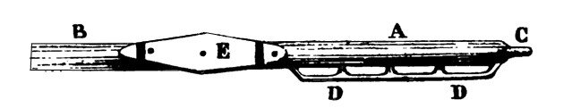

После того, как слегка отвлеклись на некоторые эпизоды российской морской истории, не сильно отличающейся, как оказалось, от событий истории современной, вернемся к системам гребли и веслам галер.
Мы закончили рассказ описанием первых шагов в развитии системы гребли a scaloccio и особенностей строения весел античных кораблей. Продолжим теперь обе эти темы и поговорим подробнее о веслах, на каждом из которых работало несколько человек, т.е. о веслах системы a scaloccio.

Весь комплект весел на галере на Средиземном море называли palamente. В упомянутых выше постах мы указали их размеры и вес. Приведем теперь сводную таблицу размеров для стандартной (Ordinaire) и флагманской (Patronne) галер:
| Ordinaire | Patronne |
Полная длина (м) | 12.25 | 14.31 |
Вес (оценка) | 130 кг | 160 кг |
Длина от конца лопасти до уключины (м) | 8.49 | 10.06 |
Длина от уключины до рукоятки загребного (м) | 3.76 | 4.25 |
Ширина лопасти в самом узком месте (см) | 12 | ? |
Ширина лопасти в самом широком месте (см) | 17.9 | 19.6 |
Наибольший диаметр весла (см) | 15.2 | 17.3 |
(Источник: Mauro Bondioli & al. “Oar Mechanics and Oar Power in Medieval and Later Galleys”,«The Age of Galley» (2000))
Вёсла, как уже было сказано, вырезали из бука, который заготавливали в лесах Дофине, Лиона, Лангедока, Лоррена и иногда в Пиренеях. Работы возглавлял королевский весельный мастер (rémolat réal). Весла как правило изготавливали прямо на месте лесоповала. Из одного ствола бука выходило, в зависимости от от его диаметра, от двух до четырех заготовок, которые весельные мастера называли estelle. Заготовки оставляли в лесу для просушки.
[Небольшое отступление. Собирая грибы в лесах на границе Швейцарии и Франции, я неоднократно наталкивался на аккуратные поленницы буковых заготовок, видимо для каких-то промышленных или ремесленных предприятий. Они лежали для сушки по году-два на одном месте, как правило поблизости от дорог, и чтобы их не растащили по периметру поленницы краской была проведена полоса: мол мы знаем, сколько здесь деревянных поленьев и если кто-нибудь утащит – это незамеченным не останется. Мне очень нужен был кусок буковой древесины для модели корабля, которую я собирал в то время. Липу удалось купить в магазине, а вот бука не было. Несколько раз останавливался у таких поленниц, пока наконец соблазн не оказался выше моих сил: я взял одну небольшую чурку и положил ее в багажник. Привез домой, но получилось так, что текущие дела не оставили времени на модель и до своего отъезда я к буковому бревну так и не притронулся… Перед отъездом полено надо было выкинуть. Но не давала мне покоя эта полоса, которая была проведена по краю поленницы; часть этой линии осталась на бревне, которое я похитил. ОНИ знали, что кто-то украл одну чурку… Это мучило меня. И в один из дней я отвез сворованное бревно на место. Оно легло точно по линии. Облегчение, которое я почувствовал, не передать. Свою огромную радость по этому поводу, помню, отметил бутылкой хорошего бордо.]
После просушки из заготовок делали весла. Часть ствола, которая была ближе к комлю, шла на изготовление более толстой и массивной секции весла (fiol) (на рисунке обозначена А), т.е. той части, которая была обращена к гребцам, а более тонкая часть была обращена к лопасти. В результате необходимо было получить примерное равенство веса внутренней части весла (fiol, длиной около 3 м) и наружной его части, почти в три раза более длинной, чтобы обеспечить балансировку весла относительно его точки опоры, уключины. Диаметр весла постепенно увеличивался от внешней его части к внутренней: он был равен 9,4 см в районе начала лопасти, 14, 8 см в районе крепления к уключине, и 15,2 см в районе той части весла, к которой крепилась рукоятка для загребного (maintenen) (обозначена буквой С). Несмотря на искусство весельных мастеров, добиться точной балансировки было практически невозможно, так как из соображений прочности и жесткости часть веретена весла рядом с лопастью не могла быть сделана очень тонкой. Поэтому окончательную балансировку получали, вкладывая в паз на рукоятке свинцовую пластину весом около 5 кг на веслах стандартных галер и приблизительно 7 кг – флагманских. Затем весло окончательно шлифовали. Так как гребцы (кроме загребного) не могли охватить весло своими руками (длина окружности там составляла около полуметра) к веретену прикреплялась специальная рукоятка из бука (manille) с отверстиями (четыре на стандартных галерах и шесть на флагманских) для рук гребцов. (см. рисунок в начале поста).
Чтобы защитить от истирания ту часть весла, которая опиралась на планширь в районе уключины, на весло крепили нагелями специальные накладки – фиши (galavernes), которые изготавливали из каменного дуба. Эти фиши были около 1 м 90 см длины, 24 см ширины и 4,5 см толщины. Осью вращения весла служил штырь уключины (escaume), изготовленный из дуба, полная длина которого равнялась 73 см, но основная часть этого штыря вставлялась в доски борта. Расстояние между уключинами было очень важной конструкционной характеристикой галеры, оно менялось в процессе эволюции корабля, но постепенно остановилось на значении 1 м 25 см, которое являлось, очевидно, оптимальным. К уключине весло крепилось прочным тросом, на одном конце которого имелся коуш (кольцо), а другим концом, который назывался крысиный хвост, найтовили весло к уключине. Учитывая, что от тщательности подгонки каждого весла и гармонизации всего комплекта галерных весел зависело, насколько быстро будут уставать гребцы, в штат галеры включали весельного мастера, который решал эту задачу. На случай замены на борту имелось 12 запасных весел.
О других особенностях системы гребли a scaloccio поговорим в следующий раз.